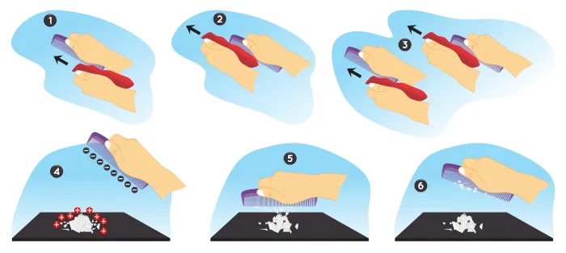

Eletrostática
Eletrostática é, por definição, a área da física que vai estudar o comportamento das cargas elétricas em repouso. Ela aborda propriedades e comportamentos das cargas, como força, campo e potencial elétricos, diferentemente da Eletrodinâmica, que estuda a dinâmica das cargas, ou seja, as cargas elétricas em movimento. É regida por dois princípios: o princípio da atração e repulsão das cargas elétricas e o princípio de conservação das cargas.
Propriedades da Eletrostática
→ Carga elétrica
Intrínseca à matéria, a carga elétrica é uma propriedade física que se origina das partículas subatômicas, prótons e elétrons. Elas podem ser positivas ou negativas, mas por convenção a carga positiva é o próton, e a carga negativa é o elétron. A carga elétrica é quantizada, o que quer dizer que ela possui um valor mínimo de ±1,6 ∙10−19 C (positivo para prótons e negativo para elétrons), conhecido como carga elementar. É impossível encontrar corpos eletrizados com menos dessa quantidade. Sua unidade de medida, de acordo com o Sistema Internacional de Unidades, é o Coulomb, representado pela letra C.
→ Eletrização
Para que ocorra a transferência da carga elétrica de um corpo a outro, é preciso que ocorra algum processo de eletrização, que pode ser por contato, atrito ou indução.
Eletrização por contato
A eletrização por contato ocorre quando colocamos um corpo eletricamente carregado em contato com outro corpo. Com isso, ambos os corpos passarão a ter o mesmo sinal e a mesma quantidade de carga elétrica, já que houve uma transferência de cargas, como podemos ver na imagem abaixo.
Eletrização por atrito
A eletrização por atrito ocorre ao atritarmos dois corpos eletricamente neutros feitos de materiais diferentes. Durante esse processo, um corpo perderá elétrons, e o outro ganhará elétrons. Após o atrito, ambos estarão eletrizados, mas com sinais opostos, sendo que um corpo ficará eletrizado positivamente, e o outro, negativamente, podendo assim se atraírem, como podemos ver na imagem.

Eletrização por indução
A eletrização por indução ocorre quando aproximamos um corpo eletricamente neutro (chamado de induzido) a um corpo eletricamente carregado (chamado de indutor), ocorrendo uma polarização das cargas elétricas, sendo que as cargas do corpo carregado atrairão as cargas de sinal contrário e repelirão as cargas com o mesmo sinal que pertencem ao corpo neutro. Posteriormente, esse corpo neutro será transformado em um corpo carregado. Para isso, é preciso que seja feita uma conexão com um fio terra, por onde fluirão os elétrons em direção à Terra ou da Terra, podendo ocorrer a retirada ou adição de elétrons ao corpo. Após o processo, cortaremos o fio e retiraremos o indutor de perto do induzido, como demonstrado na imagem.
→ Força elétrica
A força elétrica é uma grandeza física vetorial, se tratando de uma força de interação entre as cargas elétricas que varia de acordo com a distância entre elas. Caso as cargas elétricas possuam o mesmo sinal, elas terão uma força repulsiva, mas se possuírem sinais diferentes, apresentarão uma força atrativa, conforme podemos ver na imagem.
Sua unidade de medida, de acordo com o Sistema Internacional de Unidades, é o Newton, representado pela letra N.
→ Potencial elétrico
O potencial elétrico é uma grandeza física escalar que mede o trabalho da força elétrica para deslocar uma carga de um ponto a outro. É mais comum encontrarmos o termo diferença de potencial elétrico ou tensão elétrica, que nada mais é que a diferença entre dois potenciais elétricos. Sua unidade de medida, de acordo com o Sistema Internacional de Unidades, é o Volt, representado pela letra V.
→ Campo elétrico
O campo elétrico é uma grandeza física vetorial que mede a influência de uma carga elétrica sobre os seus arredores. Ao redor de um corpo eletricamente carregado surgirá um campo elétrico. Se a carga que gerou esse campo for de sinal negativo, seu campo elétrico aponta para o interior da carga, mas se a carga for de sinal positivo, seu campo elétrico aponta para fora da carga, como podemos ver na imagem.
Sua unidade de medida, de acordo com o Sistema Internacional de Unidades, é o Newton por Coulomb, representado por (N/C).
→ Energia potencial elétrica
A energia potencial elétrica é uma grandeza física escalar relacionada à interação entre cargas, sendo assim uma forma de energia relacionada à posição relativa entre pares de cargas elétricas. Caso uma dessas cargas esteja se movimentando, a energia potencial elétrica é transformada em energia cinética. De acordo com o Sistema Internacional de Unidades, a energia potencial elétrica é medida em Joule, representado pela letra J.
Princípios da Eletrostática
Existem dois princípios da Eletrostática: o princípio da atração e repulsão e o princípio da conservação das cargas elétricas.
→ Princípio da atração e repulsão
De acordo com esse princípio, as cargas elétricas que possuem o mesmo sinal se repelem, enquanto as cargas elétricas de sinais diferentes se atraem.
→ Princípio da conservação das cargas elétricas
De acordo com esse princípio, se considerarmos um sistema isolado, ou seja, sem troca de cargas elétricas com o meio externo, o somatório das cargas antes do processo de eletrização é o mesmo que o somatório das cargas depois do processo de eletrização. Sendo assim, a carga elétrica é conservada, então não pode ser criada, muito menos destruída.